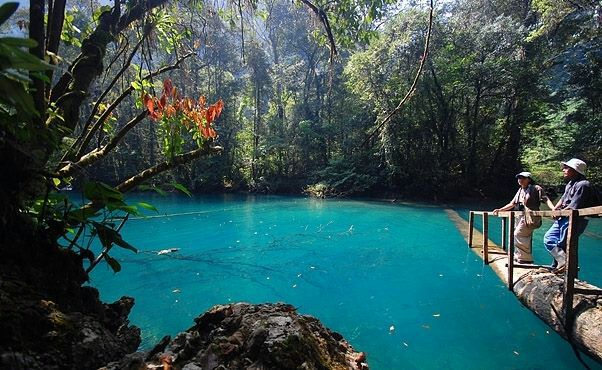
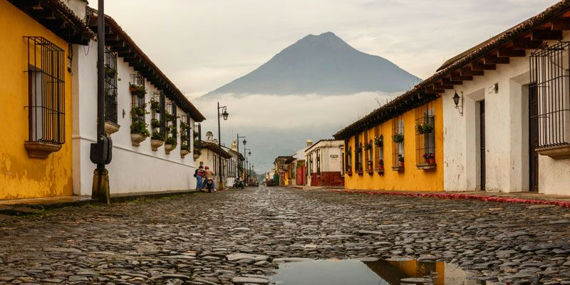
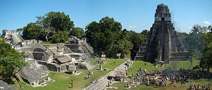
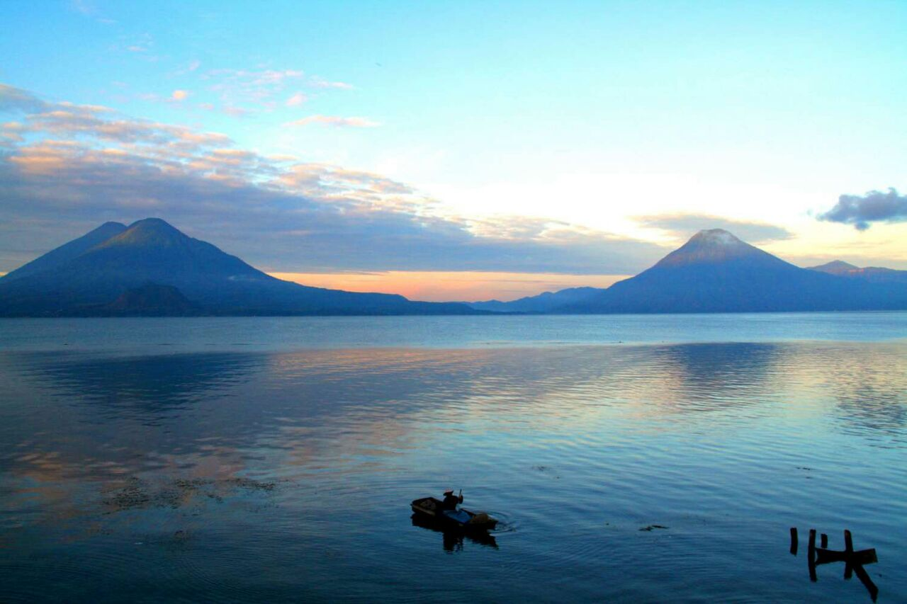
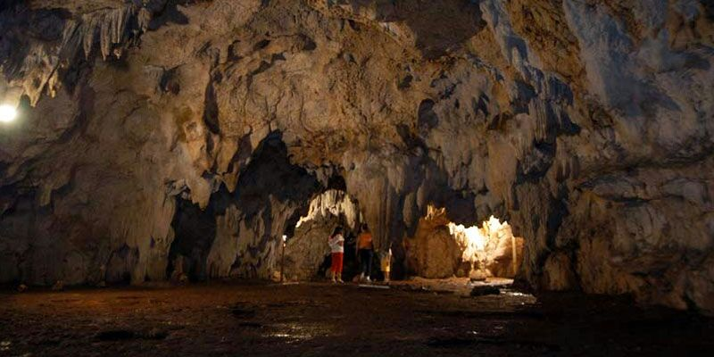

Hun Nal Ye

Rodeado de montañas se encuentra un paraíso indescriptible llamado Hun Nal Yeconocido como la Casa del Dios de la luna. Este paraíso cuenta con múltiples atractivos que provocan conocerlo como su belleza natural, hacer tubing en un río natural, el salto de garrucha, montar a caballo, nadar en piscinas naturales o bien descansar rodeado de naturaleza.
ACTIVIDADES
Puedes elegir tranquilas caminatas observando la flora y fauna de la región, nadar en tranquilas pozas de agua turquesa, disfrutar de una tarde descansando en una cómoda hamaca y por las noches observar la belleza de un cielo estrellado.
–
Y si eres amante de la aventura no puedes perderte la emoción de deslizarte por los cables de nuestro circuito de Canopy, montar a caballo o saltar de la garrucha en la poza principal.
–
También tienes la opción de divertirte jugando con tus amigos un partido de fútbol o voleibol, refrescarte en la piscina o los ríos y también puedes pescar, te facilitamos lancha y equipo de pesca para que pongas en práctica tus habilidades.
Después de una emocionante jornada descansa en nuestras cómodas habitaciones coloniales y degusta los deliciosos platillos en el restaurante del parque. Para los más aventureros contamos con área de camping, eso sí debes ir preparado para noches lluviosas.
–
En Hun Nal Ye estamos comprometidos con la naturaleza y apoyamos el desarrollo sostenible, cuidamos el medio ambiente para que lo disfrutes tu y muchas generaciones más.
–
No esperes más y ponte en contacto con nosotros para organizarte una visita a este mágico paraíso donde está la casa del Dios de la Luna de los Mayas, tenemos un museo donde puedes apreciar las piezas arqueológicas encontradas en el Parque .
Después de una emocionante jornada descansa en nuestras cómodas habitaciones coloniales y degusta los deliciosos platillos en el restaurante del parque. Para los más aventureros contamos con área de camping, eso sí debes ir preparado para noches lluviosas.
–
En Hun Nal Ye estamos comprometidos con la naturaleza y apoyamos el desarrollo sostenible, cuidamos el medio ambiente para que lo disfrutes tu y muchas generaciones más.
–
No esperes más y ponte en contacto con nosotros para organizarte una visita a este mágico paraíso donde está la casa del Dios de la Luna de los Mayas, tenemos un museo donde puedes apreciar las piezas arqueológicas encontradas en el Parque .
Antigua Guatemala

La ciudad de Santiago de los Caballeros de Guatemala, cuyo nombre oficial e histórico es Muy Noble y Muy Leal Ciudad de Santiago de los Caballeros de Guatemala y popularmente nombrada en la actualidad como Antigua Guatemala, es cabecera del municipio homónimo y del departamento de Sacatepequez,Guatemala.
Antigua Guatemala (generalmente conocida como Antigua) es una ciudad en las montañas centrales de Guatemala, junto a los volcanes Agua, Fuego y Acatenango, que la rodean. Es famosa por su bien preservada arquitectura renacentista española con fachadas barrocas del Nuevo Mundo, así como un gran número de espectaculares ruinas de iglesias. Ha sido designada Patrimonio de la Humanidad por la UNESCO en 1979.
Tikal

Tikal es el sitio excavado más grande de las Américas y contiene algunos de los restos arqueológicos más fascinantes de la antigua civilización Maya. Es la reserva natural y cultural más célebre de Guatemala y fue declarado parque nacional en 1955 y sitio de Patrimonio Mundial por la Unesco en 1979. Tikal, en Petén, alberga la Pirámide maya más alta conocida hasta la fecha y superada únicamente por "La Danta", templo enterrado en El Mirador también en Guatemala. Las etapas históricas más importantes de los sitios mayas convergen en Tikal, reino restaurado por Ah Cacau o Garra de Jaguar. Sede de templos mayas que sobresalen entre las copas de los árboles de la selva.
Tikal es el complejo-ciudad maya más famoso alrededor del mundo y sede de la pirámide más alta: el Templo IV de la Serpiente Bicéfala con 65+ metros de altura. Este templo es superado solo por "La Danta", al norte de Guatemala en El Mirador (aún bajo trabajos de excavación).
Lago de Atitlan

El accidente hidrográfico más importante del departamento de Solola en Guatemala lo constituye el lago de Atitlán, que es una de las principales fuentes económicas del departamento, pues además de ser un centro turístico de mucho atractivo, sirve de mucho apoyo comercial El Lago de Atitlán se encuentra a poco mas de 100 Km. al oeste de la capital, en el departamento de Sololá. Rodeado por tres volcanes (San Pedro, Tolimán y Atitlán) y salpicado en toda su ribera por pintorescos pueblitos de ascendencia Maya, se ha convertido en uno de los principales destinos turísticos de Guatemala.
La palabra "Atitlán" proviene del náhuatl, y es la combinación de dos palabras en esa antigua lengua indígena: "Atl" quiere decir "Agua" y "Titlán" quiere decir "Agua". Por lo tanto, Atitlán significa "Entre las aguas".
Grutas del Rey Marcos

Las Grutas del Rey Marcos son un sistema de cuevas con afluente de un río subterráneo, se han consolidado como uno de los mayores atractivos del área. Se encuentran en San Juan Chamelco, Balneario Cecilinda a pocos minutos desde el ingreso a Alta Verapaz
Al norte de Guatemala, el departamento de Alta Verapaz se ubica en un área rica en minerales, roca calcárea, karts y un complejo pero variado sistema de corrientes subterráneas.
Algunos de estos túneles producto del paso del agua permanecen inundados, otros quedan vacíos como cuevas y algunos son una mezcla: conservando cámaras llenas de agua con secciones secas y algunas intermedias.

Las Grutas del Rey Marcos como centro de atracción turística se han consagrado como de los principales y más visitados de la región.
El complejo es un conjunto de afluentes, tanto a nivel superficie como subterráneos. En el lugar se puede disfrutar de una laguna, varias pozas y la refrescante corriente del río, mientras que el afluente subterráneo se puede disfrutar solamente al ingresar a las cuevas.

San Juan Chamelco
El recorrido lleva desde la entrada de Cobán hacia San Juan Chamelco. Se cuenta con una señalización clara que va guiando por la carretera y luego calles y avenidas del lugar.
Luego de unos minutos se finaliza el asfalto y se continúa por una sección de terracería, y poco después se alcanza el ingreso a las Grutas del Rey Marcos.

La bienvenida
Cuenta con parqueo, comida y paseos por el lugar. La aventura por las cuevas inicia con el registro oficial de los visitantes. Continúa una charla introductoria sobre el misticismo de la región, el río y las cuevas. Finalmente se entregan botas de hule, casco y lámparas especiales con la respectiva explicación del uso del equipo.
El guía indica el sendero a seguir y se camina entre bosque y pequeñas cascadas, luego del ascenso se encuentra la entrada al sistema de cuevas.
Desde este punto finaliza el contacto con la luz solar y se continúa, despacio, por los túneles que el río subterráneo ha ido formando durante años.
La humedad disminuye la visibilidad. En algunos puntos se puede caminar con facilidad mientras otros demandan agacharse, sentarse y deslizarse. El agua es fría, las paredes brillantes y las formaciones minerales de formas caprichosas.
El recorrido nunca es igual
Según el clima, algunos tramos de las cuevas son inundados más que otros, por ello mismo a veces se puede caminar con el agua a nivel de los pies, como en otras fechas a nivel de las rodillas o cintura.
La duración de la caminata también depende de la fuerza del agua. Existe un recorrido turístico corto y otro largo según la temporada, clima y fuerza del agua. Pero el sistema de cuevas continúa más allá de estos puntos límite, sin embargo esas áreas son específicas para el estudio de espeleólogos profesionales.
Formaciones caprichosas
El Elefante, Las Torres Gemelas, La Virgen María, etc. La imaginación de guías y visitantes ha ido nombrando algunas de las formaciones minerales según su parecido con lugares, personajes o animales.

Algunas son fáciles de identificar, otras... requieren imaginación e iluminación.
Fuera luz
Al llegar al punto más profundo permitido se le sugiere a los visitantes que apaguen sus luces, y así contemplar por un momento el lado místico y espiritual de las cuevas.
Los aventureros suelen ir nerviosos durante el ascenso, pero ya de vuelta, más tranquilos pueden ver los demás atractivos del lugar.
Se cuenta con senderos y áreas para caminata en los alrededores.
También se dispone con espacios para picnic, compartir y descansar.
El agua del río es cristalina al igual que el de las partes profundas. Es agua fría, muy fría, sin embargo no es pretexto para disfrutar de un chapuzón HHHH.